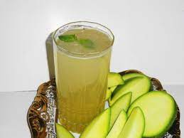

Aam panna (Boiled Mango juice)

Ingredients:-
- 2 Green raw Mangoes
- 3 tbsp Sugar
- 1 tbsp Cumin powder
- 2 tbsp Black salt
- Mint leaves
- Ice cubes
steps:-
-
Place the mangoes along with water in a sauce-pan and Boil them. Simmer for 10 minutes until it gets soft from inside.
- Let the mangoes cool and then peel them off with the help of a spoon.
- Grind the pulp with appropriate amount of water to make a thick paste of it.
-
Now put the paste in a pan and add sugar. Let it cook on the flame till the sugar dissolves completely.
- Keep stirring it continuously or else it will burn.
-
After the sugar has dissolved completely, remove the pan from fire to add cumin powder, black salt and salt to the mixture.
-
To make the drink: Add 1-2 tbsp of the mango mixture to a tall glass of chilled water. Mix well.
- Garnish with mint leaves and serve.